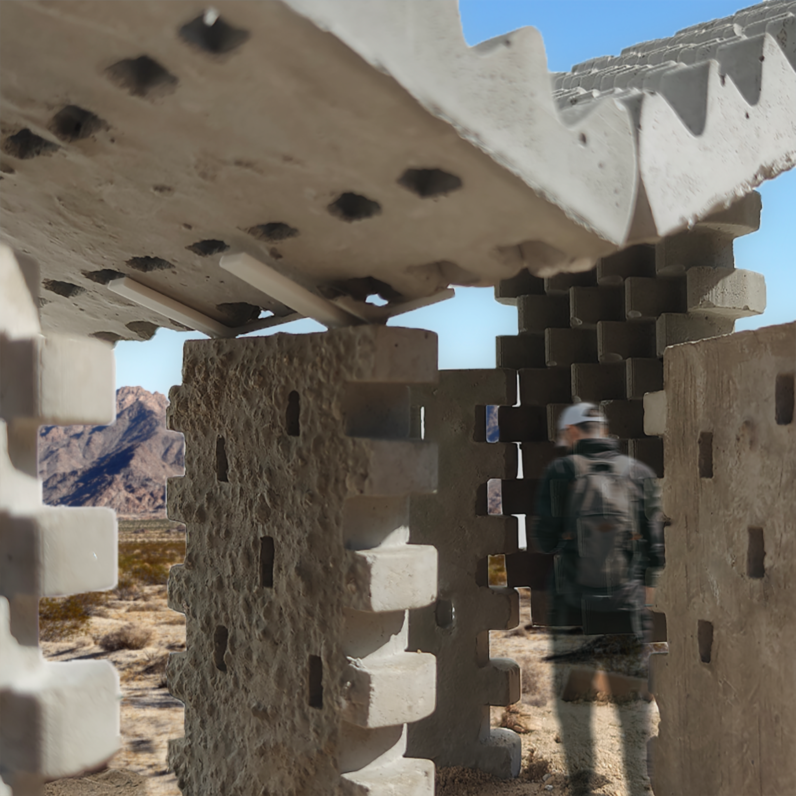
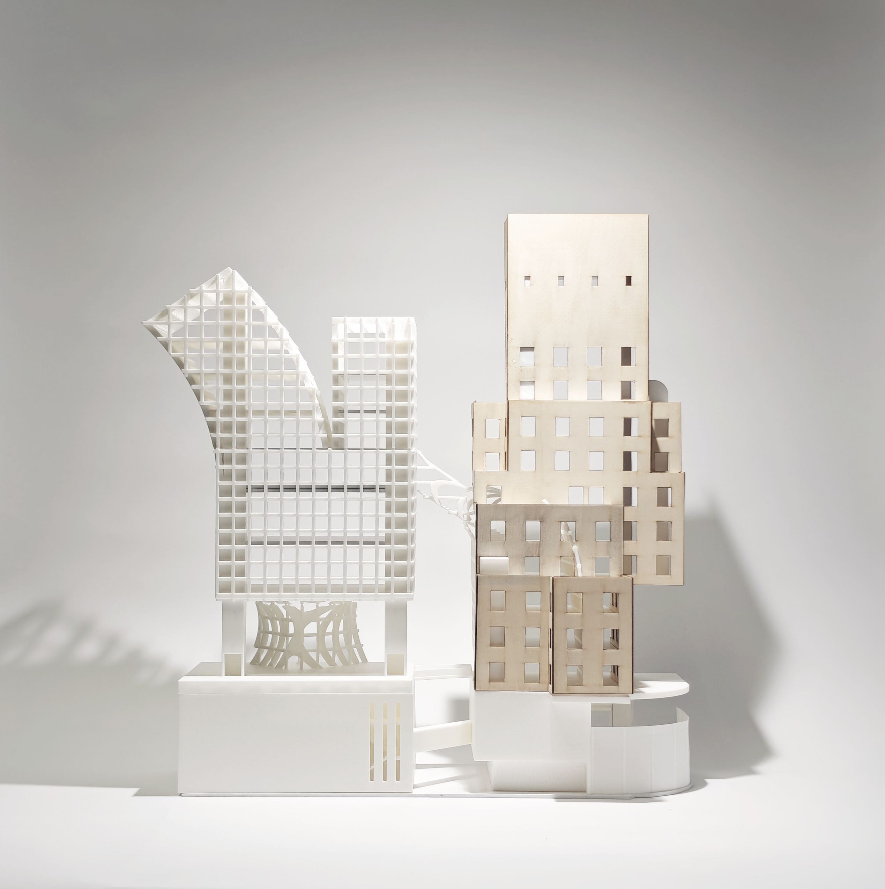
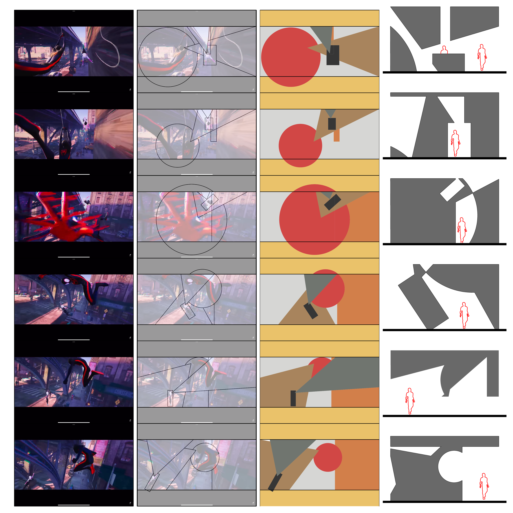
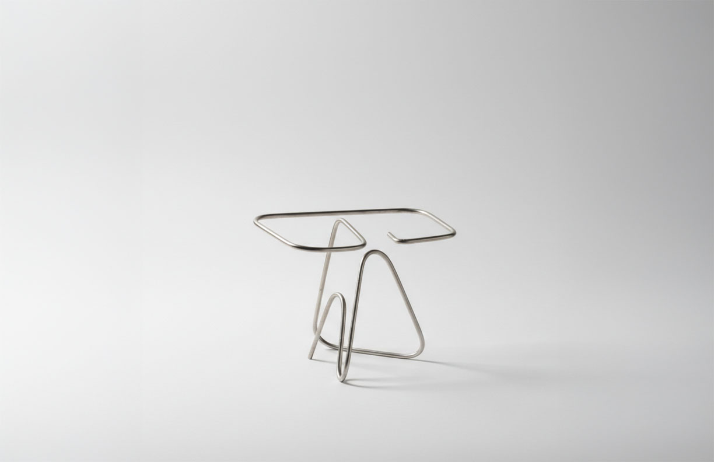
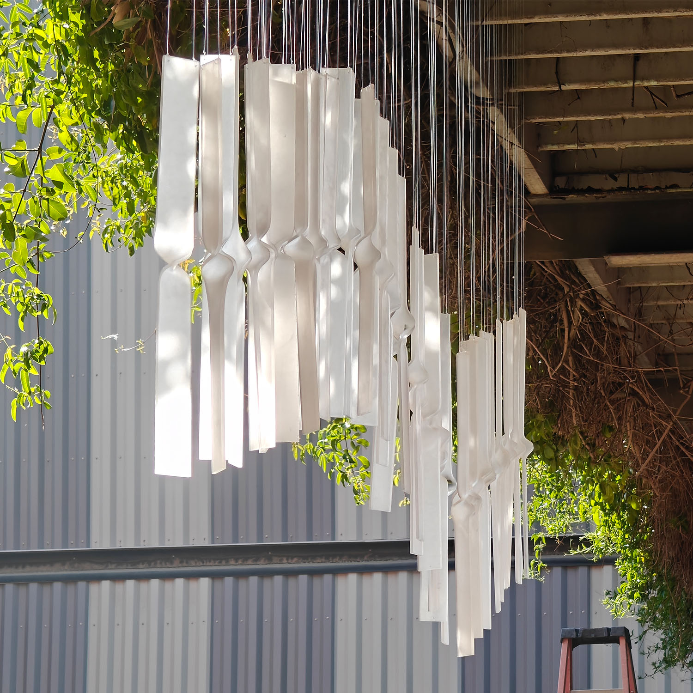
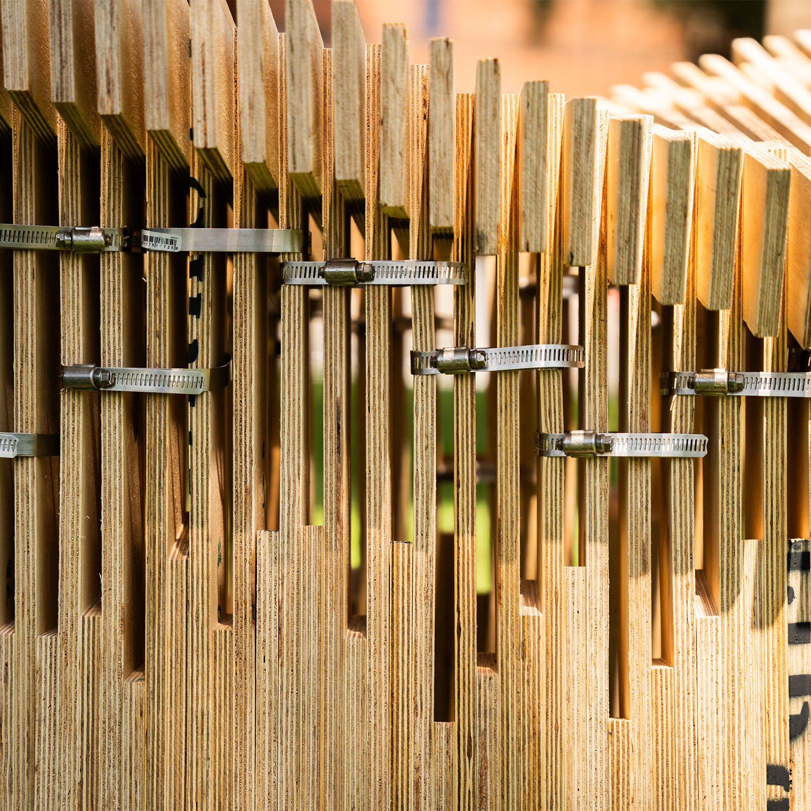

A pavilion for hikers approaching Mount Whitney. Two panel types, 75% perlite mix — the molds become benches.

The historic E. Clem Wilson Building reborn as a Center for Art, Media, and Performance. The old structure generates the new.
An underused pool site reactivated as civic space. A floating canopy shades, collects rainwater, and lets light in across a triangular urban site.

A student lounge built from motion. Footage from Spider-Verse tracked, abstracted, and extruded into a geometry frozen mid-glitch.

A bookstand from one continuous cold-rolled steel rod. Three contacts — a point, a curve, and a line.

The installation reshapes recycled acrylic into a rhythmic fielf of chimes that frame fragments of the surrounds, invite tactile interactions, and respond to movement and airflow with subtle sound and shimmer.

A recycled wood bench held together by hose clamps, using uniquely labeled components to create structure through compression and friction.